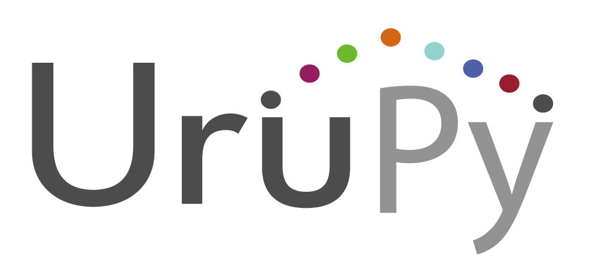

Urupy
自社システムデータ移行をご利用頂ける企業様へご提案していきます。
B to Bとして全国へ導入しているストック型ビジネスモデル。
SES/Sier
現在挑戦している力を入れているビジネスで、未経験者から玄人までのエンジニアの方をアサインし、
プログラミングやプロダクトを学びながら力を付けていく部門。
Infrastructure

仮想で作られたSIMをポケットWi-Fiに搭載した日本と世界をその1台で実現させたインバウンドとアウトバウンドに向けた完全異業種のB to B。
レンタルから卸し、OEMと様々な形でご提供が出来る商材を扱っております。
Store Management
Shop運営をしており、自社内だけの環境にて営業ノウハウ、販売方法、運営など幅広い成長が見込めるプラットフォームを持っています。